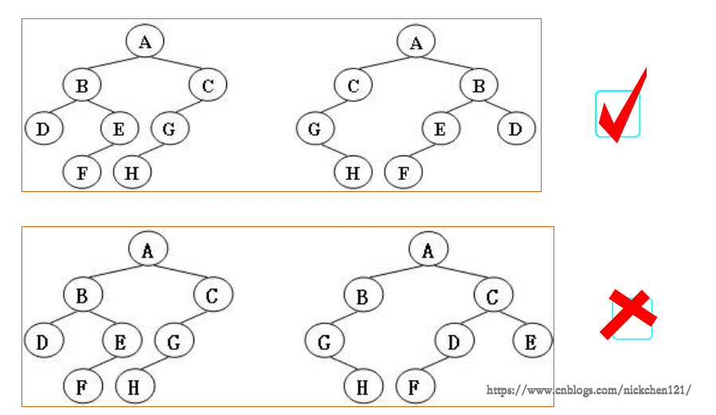
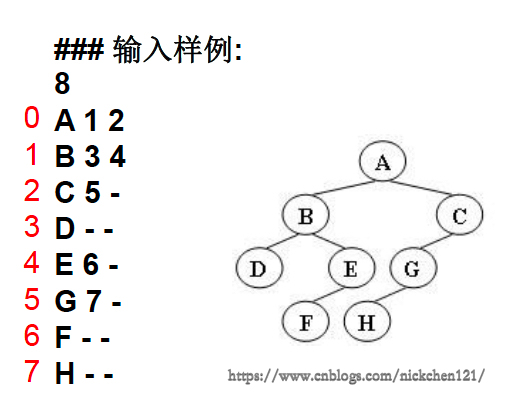
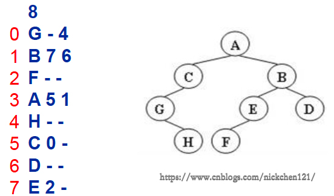

更新、更全的《数据结构与算法》的更新网站，更有python、go、人工智能教学等着你：<https://www.cnblogs.com/nickchen121/p/11407287.html
给定两棵树T1和T2。如果T1可以通过若干次左右孩子互换就变成T2，则我们称两棵树是“同构的”。现给定两棵树，请你判断它们是否是同构的。

输入格式：输入给出2棵二叉树的信息：
先在一行中给出该树的结点树，随后N行
如果孩子结点为空，则在相应位置给出“-”
如下图所示，有多种表示的方式，我们列出以下两种：


搜到一篇也是讲这个的，但是那篇并没有完全用到单向链表的方法，所以研究了一下，写了一个是完全用单向链表的方法：
其实应该有更优雅的删除整个单向列表的方法，比如头设为none，可能会改进下？
# python语言实现
L1 = list(map(int, input().split()))
L2 = list(map(int, input().split()))
# 节点
class Node:
def __init__(self, coef, exp):
self.coef = coef
self.exp = exp
self.next = None
# 单链表
class List:
def __init__(self, node=None):
self.__head = node
# 为了访问私有类
def gethead(self):
return self.__head
def travel(self):
cur1 = self.__head
cur2 = self.__head
if cur1.next != None:
cur1 = cur1.next
else:
print(cur2.coef, cur2.exp, end="")
return
while cur1.next != None:
print(cur2.coef, cur2.exp, end=" ")
cur1 = cur1.next
cur2 = cur2.next
print(cur2.coef, cur2.exp, end=" ")
cur2 = cur2.next
print(cur2.coef, cur2.exp, end="")
# add item in the tail
def append(self, coef, exp):
node = Node(coef, exp)
if self.__head == None:
self.__head = node
else:
cur = self.__head
while cur.next != None:
cur = cur.next
cur.next = node
def addl(l1, l2):
p1 = l1.gethead()
p2 = l2.gethead()
l3 = List()
while (p1 is not None) & (p2 is not None):
if (p1.exp > p2.exp):
l3.append(p1.coef, p1.exp)
p1 = p1.next
elif (p1.exp < p2.exp):
l3.append(p2.coef, p2.exp)
p2 = p2.next
else:
if (p1.coef + p2.coef == 0):
p1 = p1.next
p2 = p2.next
else:
l3.append(p2.coef + p1.coef, p1.exp)
p2 = p2.next
p1 = p1.next
while p1 is not None:
l3.append(p1.coef, p1.exp)
p1 = p1.next
while p2 is not None:
l3.append(p2.coef, p2.exp)
p2 = p2.next
if l3.gethead() == None:
l3.append(0, 0)
return l3
def mull(l1, l2):
p1 = l1.gethead()
p2 = l2.gethead()
l3 = List()
l4 = List()
if (p1 is not None) & (p2 is not None):
while p1 is not None:
while p2 is not None:
l4.append(p1.coef * p2.coef, p1.exp + p2.exp)
p2 = p2.next
l3 = addl(l3, l4)
l4 = List()
p2 = l2.gethead()
p1 = p1.next
else:
l3.append(0, 0)
return l3
def L2l(L):
l = List()
L.pop(0)
for i in range(0, len(L), 2):
l.append(L[i], L[i + 1])
return l
l1 = L2l(L1)
l2 = L2l(L2)
l3 = List()
l3 = mull(l1, l2)
l3.travel()
print("")
l3 = List()
l3 = addl(l1, l2)
l3.travel()